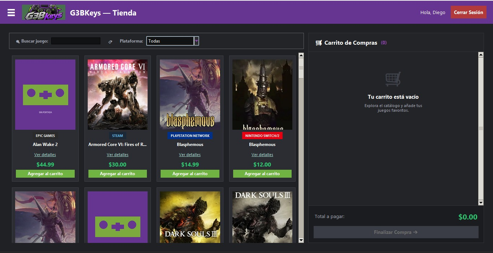

01
Pérdida de tiempo
Buscar manualmente entre diferentes archivos, hojas o conversaciones si una key está disponible.
Una solución desarrollada para mejorar la administración de una tienda dedicada a la venta de códigos digitales de videojuegos.
G3BKeys nace como una propuesta para solucionar los problemas que pueden presentarse cuando el inventario y las ventas de keys se administran de forma manual.
El sistema permite centralizar la información y facilitar la administración de clientes, proveedores, categorías, productos y ventas.
El sistema ayuda a mantener un registro organizado de cada key y cada transacción.

La administración manual puede provocar diferentes dificultades en el control de las keys y las ventas.
Buscar manualmente entre diferentes archivos, hojas o conversaciones si una key está disponible.
Copiar incorrectamente un código o marcar una key como disponible después de haber sido vendida.
Clientes o keys pueden aparecer registrados varias veces o con información diferente.
Los códigos pueden quedar dispersos entre chats, notas y diferentes archivos.
G3BKeys reúne en un solo sistema las principales operaciones necesarias para administrar una tienda de keys.
Consulta y administra las keys disponibles desde un mismo sistema.
Control del estado de cada producto: disponible o vendido.
Las ventas quedan asociadas al cliente, usuario y productos correspondientes.
Generación de reportes de ventas e inventario en formatos como PDF o Excel.